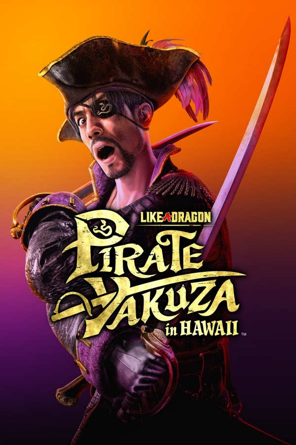

Like a Dragon: Pirate Yakuza in Hawaii
Every archived year-end list appearance, including placement and points earned.
About the Game
Édition numérique de luxeEmparez-vous du butin en choisissant l'édition numérique deluxe qui donne accès à des membres d'équipage légendaires, des pièces de bateau, des tenues emblématiques, une chanson de karaoké additionnelle, plus de musiques pour la playlist et plus encore ![CONTENU DE L'ÉDITION DELUXE]■ Jeu de base LIKE A DRAGON: PIRATE YAKUZA IN HAWAII■ PACK MEMBRE D'ÉQUIPAGE LÉGENDAIRE- Ensemble de pirates robustes- Ensemble de soutiens enthousiastes■ PACK TENUES LÉGENDAIRES- Ensemble de tenues spéciales légendaires- Ensemble de T-shirts spéciaux■ PACK PERSONNALISATION DE BATEAU- Ensemble de pièces navales Kazuma Kiryu- Ensemble de pièces navales Ichiban Kasuga- Ensemble de pièces navales Daigo Dojima- Ensemble de pièces navales RGG Studio■ PACK KARAOKÉ ET CD BONUS- Une chanson de karaoké supplémentaire- Ensemble de CD*Ce produit contient le jeu de base et du contenu additionnel. Veuillez noter que le contenu additionnel est également vendu séparément. À propos du jeuUne nouvelle épopée commence. Ses bottines en métal auront-elles le pied marin ? Incarnez Goro Majima, reconverti en pirate après avoir perdu la mémoire.Embarquez pour l'aventure rocambolesque d'un ex-yakuza devenu pirate des temps modernes en quête de ses souvenirs et d'un trésor légendaire aux côtés de son équipage. Préparez-vous à faire face à des combats endiablés à terre comme sur les flots.■ AVENTURE DE PIRATES YAKUZAS À L'HORIZON !Goro Majima, un ex-yakuza réputé, fait soudainement naufrage sur une île perdue du Pacifique. Incapable de se souvenir ne serait-ce que de son nom, il prend la mer en quête de son identité, accompagné de Noah, un jeune garçon qui lui a sauvé la vie. En quête d'un trésor légendaire, ils se retrouvent rapidement impliqués dans un conflit entre d'impitoyables criminels, des pirates des temps modernes et d'autres scélérats.■ TOUS DANS LE MÊME BATEAUAssemblez un équipage hétéroclite et améliorez votre navire en explorant le grand large. Entrez dans la légende en hissant la voile des amitiés les plus saugrenues, en terrassant vos adversaires à grands coups de canons et en vous emparant de trésors incroyables.Quand un bateau pirate ennemi vous aperçoit, faites parler la poudre dans un combat de navires intense en temps réel. Évitez les tirs ennemis en manœuvrant votre bateau et infligez des dégâts dévastateurs jusqu'à pouvoir aborder le bateau ennemi et terrasser leur capitaine dans un affrontement entre équipages. Régnez sur les flots, découvrez des îles perdues et mettez la main sur une ribambelle de butins comme un vrai pirate yakuza !■ DÉCHAÎNEZ-VOUS DANS DES COMBATS CRÉATIFS !Alternez de façon dynamique entre les styles « Loup de mer » et « Pirate » pour varier les attaques et asséner des combos, des prises et des éliminations aériennes récompensant votre créativité par de l'action spectaculaire.Terrassez vos adversaires avec rapidité, agilité et classe grâce au style « Loup de mer » et ses coups aussi précis que puissants capables de dompter vos ennemis. Ou laissez vos adversaires nourrir les poissons grâce au style « Pirate ». Maniez deux épées et servez-vous de tout un attirail de flibustier pour asséner mille millions de mille raclées.
| Released | 2025-02-21 |
|---|---|
| Developer | Ryu ga Gotoku Studio |
| Publisher | SEGA |
| Genres | Action, RPG |
| Platforms | PC, Xbox Series S/X, PlayStation 5 |
Steam CloudRPGThird PersonFantasyFunnyExplorationAction-AdventureAction RPGHack and SlashCharacter Customization3DCinematic
Where to Buy
Game information provided by RAWG.
Points by Year
List History
| Year | Source | List | Placement | Points |
|---|---|---|---|---|
| 2025 | Geeky Brummie | Top 50 Most Notable Games of 2025 | 35 | 1 |
| 2025 | NME | THE 20 BEST GAMES OF 2025 | NME.com | 20 | 3 |
| 2025 | NPR | The best games of 2025, picked by NPR's staff | Unranked | 1 |
| 2025 | WayTooManyGames | Top 20 Best Games of 2025 | 8 | 5 |